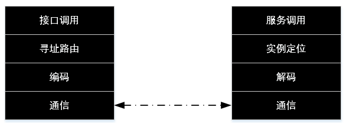
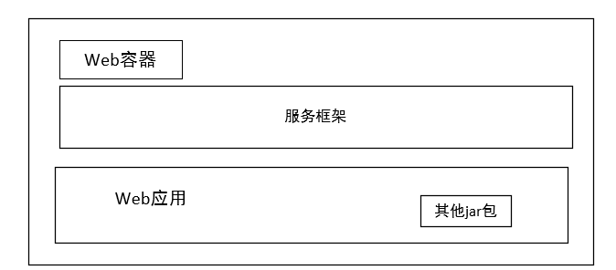
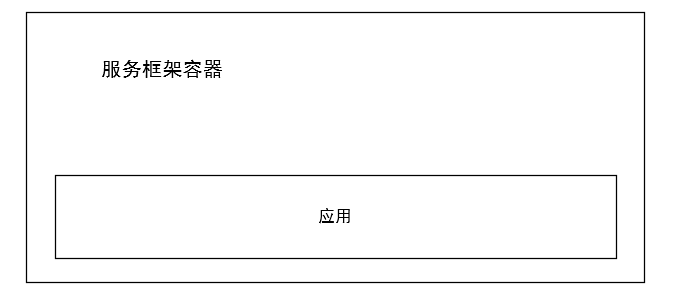
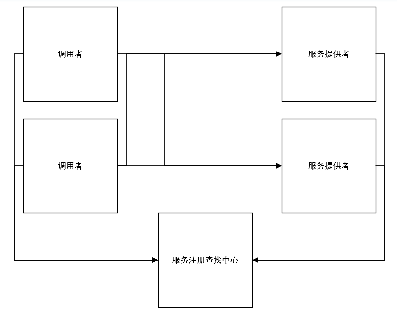

现在我们已经知道服务化方案可以解决应用臃肿的问题，那么，如何进行实现呢？
服务化会是原来的一些本地调用变为远程调用，压法人员着重提高易用性和降低性能损失。
下图给出了服务框架要解决的问题：

类比单机单进程模式，在单机单进程的程序中，方法调用就是简单的将程序计数器指向相应的入口地址，而在多机之间，调用端要指定特定服务提供端提供服务，并向其发出请求，等待回应，这种方式就好似程序的入口地址变成了特定的服务提供者（其实是服务提供者上的特定实例的特定函数）。
这里我们将服务调用者和服务提供者分开画，但是实际上，服务框架应该是既包含调用端逻辑又包含服务端逻辑的一个实现，因为，服务框架可能会调用其他服务。
我们从两个部分来考察一个服务框架如何实现：调用端和服务端。
假如我们实现一个简单的接口，代码如下：
public interface Calculator
{
int add(int a,int b);
int minus(int a,int b);
}
单机模式下，我们如此实现这个接口：
public class CalculatorImpl implements Calculator
{
public int add(int a,int b)
{
return a + b;
}
public int minus(int a,int b)
{
return a - b;
}
}
那么对于远程调用来说，我们应该如下实现该接口：
public int add(int a,int b)
{
//获取可用服务地址列表；
List<String> l = getAvailableServiceAddresses("Calculator.add");
//选择合适的目标机器；
String address = chooseTarget(l);
//建立连接
Socket s = new Socket(address);
//请求的序列化
byte[] request = getRequest(a,b);
//发送请求
s.getOutputStream().write(request);
//接受结果
byte[] response = new byte[1024];
s.getInputStream().read(response);
//解析结果
int result = getResult(response);
return result;
}
和上述图中的流程类似，我们对接口调用首先进行寻址路由，getAvailableServiceAddresses(String)方法返回所有包含该可用服务的目标机器列表。这里就和我们当初讲过的分布式系统模拟控制器的几种方式有关。
对于透明代理方式，上述方法返回的就是LVS或者负载均衡的地址和端口。如果是名称服务的方式，返回的就是用"Calculator.add"进行定位的服务地址列表。但是，值得一提的是，虽然这里我们使用的是方法名作为的定位标准，但是我们一般采用"全限定名+版本号"的形式作为查找的标准。因为，不同的版本服务实现可能不同，为了保证合理的管理，我们需要使用版本号，至于为何要用全限定名，主要还是为了防止不同包的类重名。规则服务器和名称服务很相似，但是一般规则服务器的方式更多运用在有状态的场景。
获取了服务列表后，我们需要选择一个合理的具体目标，而chooseTarget(List<String> list)方法为我们完成了这个工作，也就是负载均衡工作。
然而，接口调用的信息要通过网络进行发送，所以必须要先进行序列化，接收到的结果要进行反序列化。
最后将反序列化后的数据解析出结果，这样，一个服务框架的请求端也就完成了。
综上，我们给出服务调用端的具体工作流程：
然而，实现服务框架还存在两个问题：
针对第一个问题，我们考虑3种方案：

这种方式使服务框架变为应用的一个库，并随应用启动。但是如果要升级服务框架，就要更新应用本身，因为服务框架是与应用打包放在一起的。并且服务框架没有办法接管classloader，也就不能做一些隔离以及包的实现替换工作。

这时我们就要遵循各个容器所支持的方法，把框架作为容器的一部分，例如，针对JBoss，我们可以通过MBean实现服务框架的启动，将其部署为一个sar包来为应用提供服务。

有些情况不需要容器（不是Web应用，或者不使用现有容器）。
针对第二个问题，我们可以采用ClassLoader技术进行解决，在此就不详述了。
下面给出一份伪代码：
public class EventHandler
{
public static class Request
{
public Socket socket;
public String serviceName;
public String serviceVersion;
public String methodName;
public Object[] args;
}
public static void eventHandler()
{
while(true)
{
byte[] requestData = receiveRequest();
Request request = getRequest();
Object service = getServiceByNameAndVersion(request,serviceName,request.serviceVersion);
Object Result = callService(service,request.methodName,request.args);
byte[] data = genResult(result);
request.socket.getOutputStream().write(data);
}
}
}
服务提供者需要实时监测是否有请求传入，其中的while(true)就是在执行这项工作。receiveRequest()将请求传入的数据进行接收，并使用getRequest()方法进行反序列化。而getServiceByNameAndVersion()方法通过传入的serviceName和serviceVersion查找指定的服务，并将其交给callService()方法进行调用，然后产生结果。后来将其序列化并传给服务调用者。
我们已经了解了服务调用者和服务提供者的基本逻辑，那么现在让我们从头开始看其实现方式。
这个问题的实现和我们已知的1对1的端口交换信息不同，而是一个集群和另一个集群进行信息交互，形如下图：

由图可以看出，这已经是一个集群与集群交互信息的问题，那么就存在调用者集群中的一台主机到底和服务提供者集群中的哪个主机交互信息的问题。
采用硬件的负载均衡或者LVS进行负载均衡，示意图如下：

